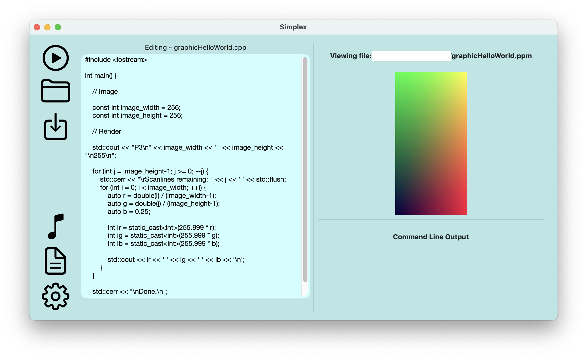

Named Simplex, after the geometrical idea of the simplest objects in an n-th dimensional space (read more), it aims to be the starting point for all developers. I created this project as my major work for Software Design and Development in my final year of schooling. It is a lightweight code editor designed to run natively on MacOS, using Swift and SwiftUI. On top of providing an environment to edit code, the Simplex code editor has in built file previewing and functionality for an in-app music player.
